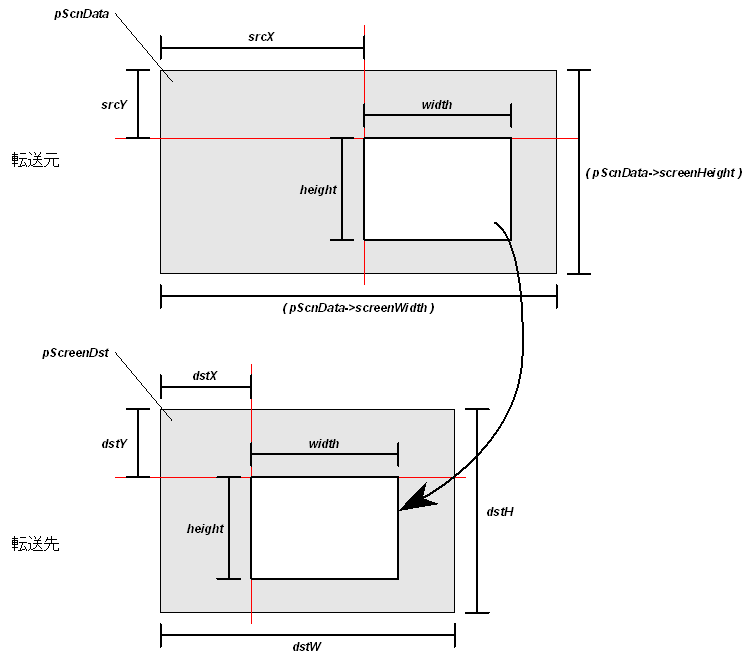
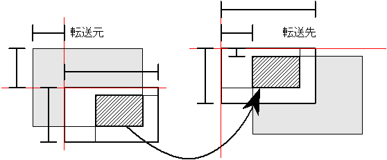

#include <nnsys/g2d/g2d_Screen.h>void NNS_G2dBGLoadScreenRect(
void* pScreenDst,
const NNSG2dScreenData* pScnData,
int srcX,
int srcY,
int dstX,
int dstY,
int dstW,
int dstH,
int width,
int height
);| pScreenDst | [OUT] 転送先基準点へのポインタ。 |
| pScnData | [IN] 転送元となるスクリーンデータへのポインタ。 |
| srcX | [IN] 転送元の左上隅のX座標。（キャラクタ単位） |
| srcY | [IN] 転送元の左上隅のY座標。（キャラクタ単位） |
| dstX | [IN] 転送先の左上隅のX座標。（キャラクタ単位） |
| dstY | [IN] 転送先の左上隅のY座標。（キャラクタ単位） |
| dstW | [IN] 転送先領域の幅。（キャラクタ単位） |
| dstH | [IN] 転送先領域の高さ。（キャラクタ単位） |
| width | [IN] 転送する矩形領域の幅。（キャラクタ単位） |
| height | [IN] 転送する矩形領域の高さ。（キャラクタ単位） |
なし。
スクリーンデータ中の指定された矩形をバッファの指定された位置にコピーします。
pScnData の (srcX, srcY) を左上隅として 幅 width、高さ height の領域を、 pScreenDst を原点としたときの (dstX, dstY) から 幅 width、高さ height の領域にコピーします。
転送する領域は転送元や転送先の領域内に収まるようにクリッピングされます。 クリッピングによって除外された領域には何も転送されません。
図のように転送する領域が転送元や転送先をはみ出している場合、実際に転送されるのは転送する領域の中で転送元と転送先の領域に収まっている部分だけです。 図の場合は斜線の領域だけが転送される事になります。
2007/01/23 クリッピングを行うように変更
2006/01/16 引数を変更
2005/06/16 初版